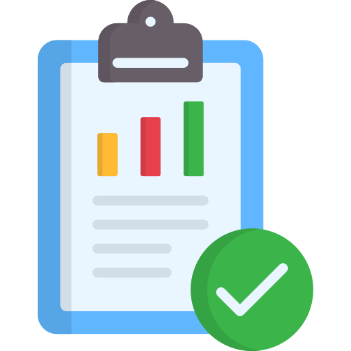

Réunions et travail en mode projet

Réunions et travail en mode projet
__________________________________________________________________________________________________________________________________________________________________________
Les tâches sont définies attribuées par le patron

__________________________________________________________________________________________________________________________________________________________________________
Nous définissions les résultats attendus
Définition de ce que devais retourner une fonctionnalité que j'ai dû créer
__________________________________________________________________________________________________________________________________________________________________________
Aide et redéfinitions ni nécéssaire

Lorsque j'ai du mal à comprendre, on se fixe un rendez-vous, et on regarde ce qui bloque, on le corrige quitte à revoir notre approche
__________________________________________________________________________________________________________________________________________________________________________
1 fois par mois, on fait le point sur notre avancement lors d'une réunion

__________________________________________________________________________________________________________________________________________________________________________
Ressemblance avec la méthode AGILE : Interaction et Réaction au changement !